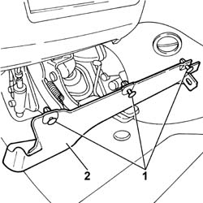
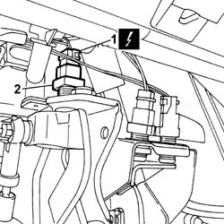

5580A38 SWITCH ON CLUTCH PEDAL FOR CRUISE CONTROL - R+R
- Path
- Procedures > 55 ELECTRICAL EQUIPMENT > 5580 SPECIAL ACCESSORIES > 5580A CRUISE CONTROL SYSTEM > 5580A38 SWITCH ON CLUTCH PEDAL FOR CRUISE CONTROL - R+R
- Kind
- repair procedure (removal / refitting; the operation number is the code)
- Applies to
- all engines; all production periods
- Interactive page
- https://sloeber94.github.io/elrnDB-fUlss/en/#/179007623
Applies to: all engines; all production periods
 Removing
Removing
 Refitting
RefittingOp. 5530B56 BATTERY DRIP TRAY COVER - R.R.
- Disconnect the negative battery terminal.
 | Description | Code | Function |
|---|---|---|---|
. | Knife | 1.878.077.000 | Release the fastening buttons |
2. Remove the lower trim.

Applies to: all engines; all production periods
1. Disconnect the electrical connection.
- Lock the lower ring nut.
2. Undo and remove the brake lights switch.

Applies to: all engines; all production periods
Refitting
Removing- Position the lower ring nut.
- Tighten the brake light switch
- Connect the electrical connection.
- Connect the negative battery terminal.